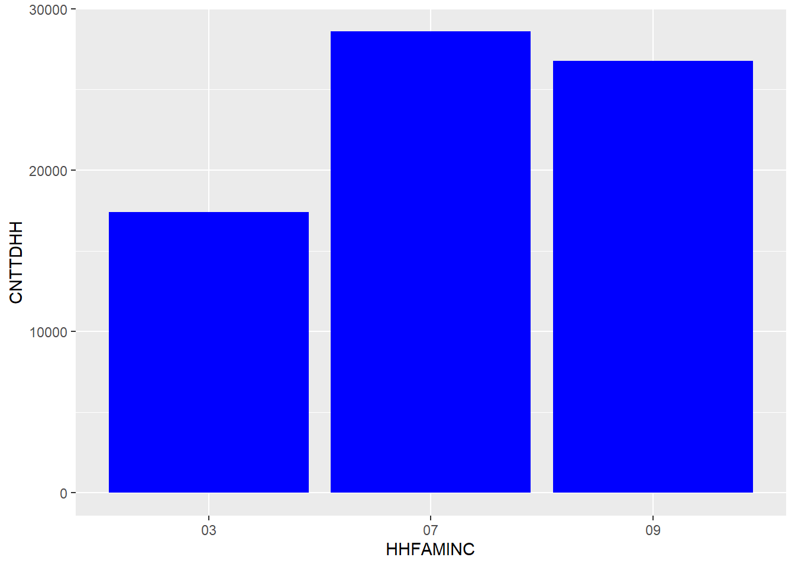
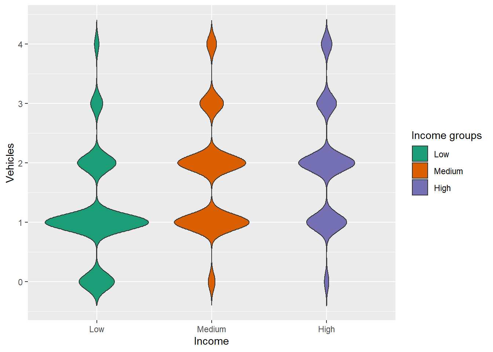

Data Analysis
Abhishek
12/9/2019
For doing this analysis, I used three data sets from NHTS(National Household Travel Survey), the 2001, 2009 and 2017 datasets
And the data from these datasets used are :
HHFAMINC - Household income
03 - $15,000 TO $24,999;
07 - $75,000 to $99,999;
09 - $125,000 to $149,999
I used these 3 income groups to represent the three types of income groups, lower, medium and high, as they have the most number of people than consequent datasets.
HHVEHCNT - Count of Household vehicles
RAIL- MSA heavy rail status for household
WTHHFIN - Data needed to weight Household data
CNTTDHH - Count of household trips on travel day
#Extracting the data and assigning them to a dataset
library(tidyverse)
year_2001 <- read_csv("2001/HHPUB.csv") %>%
mutate(HOUSEID = as.factor(HOUSEID), Year = c(rep (2001, 69817))) %>%
select(HHFAMINC, CNTTDHH, HHVEHCNT, Year, RAIL, WTHHFIN, MSASIZE)
year_2009 <- read_csv("2009/HHPUB.csv")%>%
mutate(HOUSEID = as.factor(HOUSEID), Year = c(rep (2009, 150147)))%>%
select(HHFAMINC, CNTTDHH, HHVEHCNT, Year, RAIL, WTHHFIN, MSASIZE)
year_2017 <- read_csv("2017/hhpub.csv")%>%
mutate(HOUSEID = as.factor(HOUSEID), Year = c(rep (2017, 129696)))%>%
select(HHFAMINC, CNTTDHH, HHVEHCNT, Year, RAIL, WTHHFIN, MSASIZE)Below, we can see that there are a lot of trips made by people in the medium incomde group, infact more than people in the higher and lower income groups.
The below shown data are geom columns, a way of displaying data in R, in which the x-axis represents the family income groups and the y-axis represents the number of trips made by the different income groups.
2001 - In 2001 we can see that there are nearly the same number of trips made by the income groups 07 and 09. The no. of trips made by the income group 03 is significantly lower than the other two.
#Creation of geom col
year_2001 %>%
filter(HHFAMINC %in% c("03","07","09"))%>%
ggplot(aes(x = HHFAMINC, y = CNTTDHH, weight = WTHHFIN)) + geom_col(fill = "blue")
2009 - Compared to the previous year observed, there is approximately the same number of trips made by the 03, 09 income groups, but still the group 07 has more trips.
2017 - A major increase in the number of trips from the above previous years. Majority of the trips are made by the income group 07 and they consitute to nearly the total trips made by the groups 03 and 09.
I have also displayed the car ownership data of the three income groups to show the density of car ownership and we can see from the data that there is more ownership of two cars in the income group 07.
2001 - Clearly more number of people in the group 03 have more single cars.
library(DT)
datatable(head(year_2001))#Creation of Violin plot
violin_plot2001 = year_2001%>%
filter(HHFAMINC %in% c("03","07","09"))%>%
mutate(Vehicles = ifelse(HHVEHCNT > 3, 4, HHVEHCNT),
Income = factor(HHFAMINC,levels = c("03","07","09"), labels = c("Low","Medium","High")))%>%
ggplot(aes(x = Income, y = Vehicles, weight = WTHHFIN, fill = Income))+
geom_violin(trim = FALSE)+scale_fill_brewer(palette="Dark2", name = "Income groups")
violin_plot2001
2009 - This year, we can observe that people in the groups 07 and 09 possess nearly the same level of ownership of 2 to 3 cars.

2017 - Now, as per the latest survey data collected, there is almost the same car ownership of 1 car in the group 03 as there is ownership of 2 cars in the group 07.

To get the data prepared for analysis, I weighted the HHFAMINC data to the weighted household data in the hhpub file.